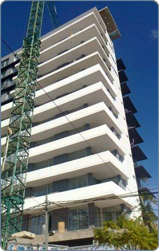
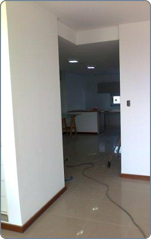
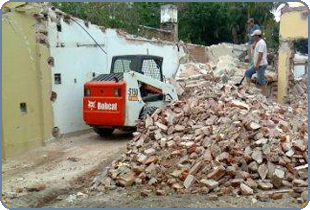
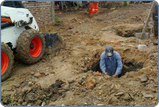
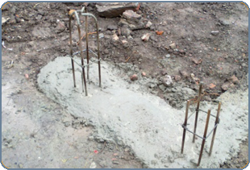
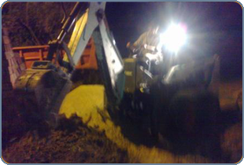

edgardo_espinola@hotmail.com
(0362) 444 0477
edgardo_espinola@hotmail.com
(0362) 444 0477
|  | Política de privacidad1. USO Y TRATAMIENTO DE DATOS DE CARÁCTER PERSONAL ESPÍNOLA EDGARDO GABRIEL le informa que los datos de carácter personal proporcionados, a través del sitio web, así como los que pudiera facilitar en el futuro en el marco de su relación jurídica con esta entidad, son archivados bajo seguridad en nuestros servidores. El almacenamiento de esta información tienen la finalidad de gestionar, administrar, prestarle los servicios o facilitarle los productos que solicite, facilitar el cumplimiento y ejecución de los contratos que pudiera celebrar, conocer mejor sus gustos y adecuar los servicios a sus preferencias, así como poder ofrecerle nuevos servicios o productos y enviarle información administrativa, técnica, organizativa y/o comercial de forma documental y/o electrónica relacionada con las actividades de ESPÍNOLA EDGARDO GABRIEL Los destinatarios de la información recogida serán principalmente los empleados de ESPÍNOLA EDGARDO GABRIEL Salvo en los campos en que expresamente se determine lo contrario por medio de un asterisco (*), las respuestas a las preguntas sobre datos personales son voluntarias, sin que la falta de contestación a dichas preguntas implique una merma en la calidad de los servicios que usted solicita. La falta de cumplimentación de los campos determinados como obligatorios o el suministro de datos incorrectos imposibilitará que ESPÍNOLA EDGARDO GABRIEL pueda prestarle los servicios o le facilite los productos que solicite. Los usuarios garantizan y responden, en cualquier caso, de la veracidad, exactitud, vigencia y autenticidad de la información personal facilitada, y se comprometen a mantenerla debidamente actualizada. 2. EJERCICIO DE DERECHOS: ACCESO, RECTIFICACIÓN, CANCELACIÓN Y OPOSICIÓN. Aquellas personas físicas que hayan facilitado sus datos a ESPÍNOLA EDGARDO GABRIEL podrán dirigirse a esta entidad, en su calidad de titular de los datos, con el fin de poder ejercitar gratuitamente sus derechos de acceso, rectificación, cancelación y oposición respecto de sus datos, conforme la normativa vigente. Conforme se establece en el artículo 14, inciso 3 de la Ley Nº 25.326, el titular de los datos personales tiene la facultad de ejercer el derecho de acceso a los mismos en forma gratuita a intervalos no inferiores a seis meses, salvo que se acredite un interés legítimo al efecto. Dado el carácter confidencial de la información, usted no podrá ejercitar sus derechos telefónicamente, sino que lo deberá solicitar por cualquier medio que deje constancia de su envío y de su recepción y remitir copia de su DNI o documento equivalente. El interesado podrá ejercitar sus derechos mediante comunicación por escrito dirigida a ESPÍNOLA EDGARDO GABRIEL en la dirección indicada al inicio o a la dirección de correo electrónico edgardo_espinola@hotmail.com. Se informa que la Dirección Nacional de Protección de Datos Personales, Órgano de Control de la Ley Nº 25.326, tiene la atribución de atender las denuncias y reclamos que se interpongan con relación al incumplimiento de las normas sobre protección de datos personales. 3. MEDIDAS DE SEGURIDAD ESPÍNOLA EDGARDO GABRIEL está obligado a cumplir con toda la normativa aplicable en materia de medidas de seguridad aplicables a la información y datos de carácter personal. ESPÍNOLA EDGARDO GABRIEL le informa que tiene implantadas las medidas de seguridad de índole técnica y organizativas necesarias para garantizar la seguridad de sus datos de carácter personal y evitar su alteración, pérdida y tratamiento y/o acceso no autorizado, habida cuenta del estado de la tecnología, la naturaleza de los datos almacenados y los riesgos a que están expuestos, ya provengan de la acción humana o del medio físico o natural. Así, ESPÍNOLA EDGARDO GABRIEL ha establecido medidas adicionales en orden a reforzar la confidencialidad e integridad de la información en la organización. No obstante, el usuario debe ser consciente de que las medidas de seguridad en Internet no son inexpugnables y enteramente fiables y que ESPÍNOLA EDGARDO GABRIEL no puede garantizar la inexistencia de virus u otros elementos que pudieran producir alteraciones en los sistemas informáticos (software y hardware) del usuario. ESPÍNOLA EDGARDO GABRIEL continuamente mantiene la supervisión, control y evaluación de los procesos para asegurar el respeto a la privacidad de los datos. 4. USO DE COOKIES Las “cookies” constituyen una herramienta empleada por los servidores web para almacenar y recuperar información acerca de sus usuarios. La finalidad de las “cookies” de ESPÍNOLA EDGARDO GABRIEL es personalizar los servicios que le ofrecemos, facilitándole información que pueda ser de su interés. Si no desea que se instale en su disco duro una cookie puede configurar el navegador de su ordenador para no recibirlas. Sin embargo, le hacemos notar que, en ese caso, la calidad del funcionamiento del sitio web puede disminuir. Los “logs” son unos archivos almacenados en el servidor de ESPÍNOLA EDGARDO GABRIEL que registran datos sobre su navegación y nos permiten seguirle prestando los servicios que solicita. Asimismo, nos ayudan a analizar el funcionamiento del sistema, localizar las incidencias y problemas que puedan surgir y solventarlos en el menor plazo posible. 5. MENORES DE EDAD ESPÍNOLA EDGARDO GABRIEL considera que la protección de datos de carácter personal es esencial, por lo que en el supuesto de que el usuario sea menor de edad, éste sólo podrá aportar sus datos personales en los formularios de recogida de los mismos, con el previo consentimiento de los padres o tutores, enviando el formulario correspondiente debidamente firmado por los padres o tutores por correo certificado y con copia del DNI del padre o tutor firmante a la dirección de ESPÍNOLA EDGARDO GABRIEL arriba indicada. ESPÍNOLA EDGARDO GABRIEL no responde de aquellos datos de menores que sin poder conocer ESPÍNOLA EDGARDO GABRIEL este hecho se haya facilitado sin el consentimiento de los padres o tutores. 6. MODIFICACIÓN DE LA POLÍTICA DE PRIVACIDAD. ESPÍNOLA EDGARDO GABRIEL se reserva el derecho a modificar su Política de Privacidad. Cualquier modificación de la Política de Privacidad será publicada antes de su efectiva aplicación. El uso del sitio web después de dichos cambios, implicará la aceptación de éstos. 7. LEGISLACIÓN Cualquier controversia que se derive del uso de este site, será interpretada y sometida de acuerdo con las leyes de Argentina. |
 |
|  |  |  |  |
 |